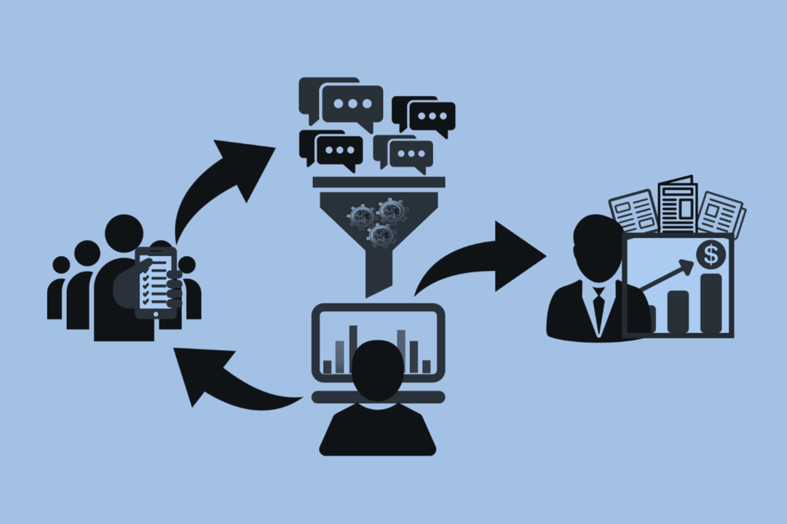

Working Groups
MD4SG working groups bring together academic researchers from various disciplines to tackle problems in real-world application domains through online working groups. These groups work towards research, implementation, and advocacy projects throughout the year. Notes from the original reading group can be found here.
If you are interested in being involved or pitching problems to these working groups in any of the domains below, please contact Bryan Wilder at bryan.wilder0@gmail.com.
 Environment and ClimateOrganized by Wanyi Li (Stanford) and Lily Xu (Harvard) 
Environment and ClimateWe study how computational methods can help address environmental challenges, particularly those that exacerbate the climate crisis. |
Algorithms, Law, and PolicyOrganized by Rediet Abebe (Harvard), and Duncan McElfresh (University of Maryland) Algorithms, Law, and PolicySome of the topics the group will work on include but are not limited to free speech, content moderation, antitrust, the use of “black box” machine learning models, data-driven algorithms, and decision-support tools. |
|
|

Data EconomiesOrganized by George Obaido (UJ, Wits), Abeba Birhane (UCD) and Roya Pakzad (Taraaz) |
Global Perspectives on InequalityOrganized by Sam Taggart (Oberlin) 
Global Perspectives on InequalityWe study how computational methods can either address or exacerbate inequality, both globally and for vulnerable populations in the United States. |
Civic ParticipationOrganized by Paul Gölz (CMU) and Anson Kahng (CMU) 
Civic ParticipationWe study the mathematical theory of civic participation, focusing on novel modes of democratic decision making that complement traditional elections. |
Latin America and CaribbeanOrganized by Francisco Marmolejo (University of Oxford), Michelle González Amador (UNU-MERIT), Mariajose Silva-Vargas (UNU-MERIT), and Juan Felipe Penagos (Fundación Ceiba) Latin America and CaribbeanMajor themes include: migration (especially the Venezuelan diaspora), crime (with a focus on youth crime), and education (integrating/engaging at risk youth in educational systems). |
Photos by Duangphorn Wiriya; rawfilm; and rawpixel on Unsplash